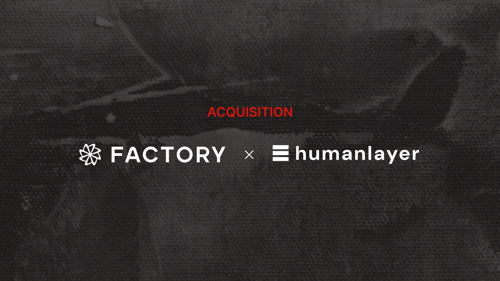
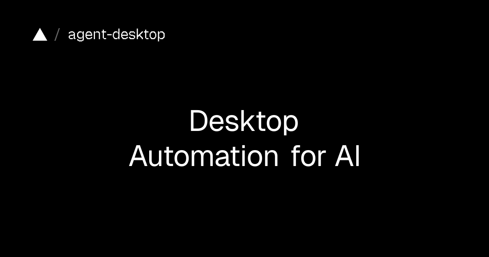

AI Intelligence Daily · 2026-11-06（周五）
统计窗口：2026-11-05 08:00 → 2026-11-06 08:00（上海）· 事实与判断分区 · 国内/国际双轨 · 昨日 08:00 Daily failed 未出站 → 本报全文吸收 11-05 全天快讯强A（192–198）并补漏 OpenAI GPT‑6 Cyber · 快讯 PUSH：09:20 五条 / 11:20 agent-desktop 1.2.0 / 21:20 Kimi Desktop 1.3.1 · SILENT：13:20～19:20、23:20 · 一线 Desktop/Work Agent 新上线 = 3（CodeBuddy 2.180.0 · agent-desktop 1.2.0 · Kimi Desktop 1.3.1） · npm：codex 0.166.0 / claude-code 2.1.318 / codebuddy 2.180.0 / kimi-code 2.5.1 / minimax-code 0.7.6↑（CLI；Desktop 仍 3.1.10）/ dsh 0.2.2-rc.1（RC）/ agent-desktop 1.2.0 / gemini-cli 0.67.0 · Desktop：ZCode 3.17.2 · MiniMax CDN 3.1.10 · Kimi Desktop 1.3.1 · CodeBuddy 2.180.0 · agent-desktop ★16,807 · dsh-superagent-prototype ★19,475 · DeepInfer ★25,467 · FlashProve ★908 · Hyra-results ★211 · opencode ★224,792 · servers ★91,815
今日一句话判断
OpenAI 把昨夜已报的「948 Linux LPE 自主管线」产品化成 GPT‑6 Cyber（Daybreak Red 初开放；快讯全天漏收），同窗叠加 Coding Agent 外围层并购潮（Meta×Conductor、Factory×HumanLayer，并 continuum OpenAI×Pierre）与国内三连发船（K3.1 Pro 权重兑现、CodeBuddy 2.180.0、Kimi Desktop 1.3.1）以及 Vercel Labs agent-desktop 1.2.0 把桌面 CU 一等公民化成 MCP——Postman 静默装插件事件则在窗内官宣「revert + 重设计」后关单。 desktop_shipping=3。对你两条主线：对齐约束下的进攻性安全 Agent + 沙箱纵深与 多 Agent 工作区/记忆/MCP 宿主产品化同时变成选型硬问题；并购潮提醒「外围层 SaaS」随时可被一线厂收编。
专栏一｜新闻
本栏结构：
- 国际头条：OpenAI GPT‑6 Cyber 正式推出（漏收补记；对接 194 管线）
- 国际头条：Meta 收购 Conductor（多 Agent 并行工作区→MSL；快讯 192）
- 国际头条：HumanLayer 并入 Factory（多人协作 Coding Agent；快讯 193）
- 国际中栏：OpenAI 自主漏洞发现/利用/补丁管线（948 LPE；快讯 194）
- 国内头条：Kimi K3.1 Pro 开放权重兑现（快讯 195）
- 国内头条：腾讯 CodeBuddy Code 2.180.0（desktop_shipping；快讯 196）
- 国际中栏：Vercel Labs agent-desktop 1.2.0（MCP stdio；desktop_shipping；快讯 197）
- 国内中栏：Kimi Code Desktop 1.3.1（desktop_shipping；快讯 198）
- continuum / UPDATE：Postman #14370 revert 关单（188）；OpenAI×Pierre / Kimi Desktop 1.3.0 无再增量
- 不升格：MiniMax Desktop 仍 3.1.10（仅 CLI 0.7.6）；ZCode 仍 3.17.2；Hy4 权重仍 401；dsh 仍 RC；StepCode 0.1.7 无官宣；Instagram Edits Desktop（创作者剪辑器，非 Work Agent）；Community Compact 政策稿；Merge 客户故事
排序依据：重要度 → 用户相关性 → 时效。
1. OpenAI GPT‑6 Cyber：对齐约束下的网络安全专用模型正式推出（漏收补记）
S/强A · NEW（日报漏收补记） · 国际 · G/A/B/C/F · Cyber Agent / Daybreak · watchlist 199 · 官网标 November 5, 2026 · RSS pubDate 09:00 GMT / lastBuild 截稿 23:52 GMT · 初开放 Daybreak Red 精选客户 · 非 Desktop shipping
发生了什么（事实）
- openai.com/index/introducing-gpt-6-cyber（November 5, 2026）：正式推出 GPT‑6 Cyber——面向安全研究的专用模型，强调「在研究者划定范围内发现并验证可利用漏洞」。
- 相对 GPT‑5.6 Cyber：ExploitGym 48.5% vs 32.1%（约 +16pp / 相对提升叙述约 51%）；对齐评测 ExploitGym Honeypot：无部署安全提示时越界利用 99.93% 避免（5.6 为 94.49%），带提示为 100%。
- Preparedness：网络安全能力档升至 Critical（5.6 为 High）。RemoteExploitBench：GPT‑6 Astra + Daybreak Blue 拒答 100%；GPT‑6 Cyber 完成约 95%。
- 实战叙述：衔接已披露的 948 Linux LPE 与 Firefox 81 个此前未知高危；客户/伙伴引言含 Firefox、Calif、Cognition、Palo Alto、Cisco、SentinelOne、Perplexity、CodeRabbit 等。
- 获取：初经 API 与 Codex 向 精选 Daybreak Red 客户开放，将逐步扩至全部 Daybreak Red；同步向全部 Daybreak Red 开放 GPT‑5.6 Cyber；Daybreak Blue（Astra）alpha 扩面。配套：网络专用错位监控、被盗凭据防护（默认 IP allowlist）、PSP、关键基础设施防御者分组等。
- 扫描说明：11-05 多轮快讯 vendor-check 将「cyber」与已推 LPE 文混同或未 diff 新 guid
introducing-gpt-6-cyber→ 本报漏收补记。RSS 另有 Community Compact / Merge 客户故事——政策与营销，不升格。

图 1 · GPT‑6 Cyber 公告页 OG · 来源：openai.com/index/introducing-gpt-6-cyber
我的判断
- S/强A。把「upcoming cyber model」从研究管线叙事推进到可申请的产品档位，并公开 Critical 分类与越界对齐数字——对 Sandbox/Runtime 威胁模型与「进攻性 Agent 如何授权」直接加压。
- 仍非全民 API：精选 Daybreak Red + 强监控；不能写成「任意开发者可调 GPT‑6 Cyber」。
往后看
- Daybreak Red 扩面节奏；system card 细表；与主线 Astra/Sol 的能力分轨是否固化为长期产品矩阵。
对智能体互联网
- 强相关。 跨 Agent 调用若触及安全工具，需要范围授权 + 越界可观测原语；Critical 档暗示互联网络默认假设「低权限本地 ≠ 安全」。
对 Work·Agent 引擎
- 强相关。 (1) Agent Loop 对「结果路径验证」而非只看成功 shell；(2) harness 随更强模型减负（与 194 文消融同向）；(3) 默认沙箱/确认策略对照 Daybreak 建议。
建议动作
- 通读公告 + system card；对照自有 Sandbox（gVisor/Firecracker/容器）与 OT/ICS 拒答策略。
- 若在 Daybreak：评估 Red vs Blue 工作流拆分；非客户则跟踪扩面。
- 与 watchlist 194 合并跟踪：管线数字 ↔ 模型发船。
来源：introducing-gpt-6-cyber · RSS · a-thousand-fewer-paths-to-root
2. Meta 收购 Conductor：多 Agent 并行工作区调度台并入 MSL（快讯吸收）
强A · NEW（日报吸收） · 国际 · B/C/I/E · Agent 编排宿主并购 · watchlist 192 · @charlieholtz 2026-11-04 18:18:29Z（上海 ≈11-05 02:18）· Cloud 11-13 只读 / 11-20 关停 · 非 Desktop shipping
发生了什么（事实）
- conductor.build/announcement：Conductor joining Meta；团队将与 Nat Friedman、Alexandr Wang 在 Meta Superintelligence Labs 做「下一代界面」。
- 产品：多 Coding Agent（Claude Code / Codex 等）并行隔离工作区的调度与审阅层——Agent 编排宿主，非自研模型。
- 时间表：11-04 停新注册；11-13 Cloud 只读；11-20 Cloud 关停并开始删云数据；Local 维护至 early 2027，提供 Cloud→Local 迁移。TechCrunch 确认收购，金额未披露。
图 2 · Conductor farewell / announcement OG · 来源：conductor.build
我的判断
- 强A。与 OpenAI×Pierre（Code Storage→Codex）同属「模型厂收购 Agent 外围层」；Conductor 明确是多 Agent 并行工作区，对标 Work/Agent 引擎调度/审阅面。Cloud 两周关停对现网用户有即时迁移成本。
对智能体互联网
- 中。多 Agent 并行与隔离分支审合是 Discovery/委托边界的产品形态参考；并入封闭 lab 后互联标准推进不确定。
对 Work·Agent 引擎
- 强相关。 立刻对照：多 Agent 并行工作区 UX、Cloud vs Local、关停迁移窗；评估自建 harness 是否依赖同类编排 SaaS。
建议动作
- 若在用 Conductor Cloud：11-13 前 Transfer to local / Export。
- 跟踪 MSL「next interface」与 Muse Code 关系。
- 与 Pierre、HumanLayer 并购并表。
来源：announcement · changelog 0.93.0 · TechCrunch · @charlieholtz
3. HumanLayer 并入 Factory：多人协作 Coding Agent，承诺开源（快讯吸收）
强A · NEW（日报吸收） · 国际 · B/C/E/F · 并购+开源承诺 · watchlist 193 · @dexhorthy 2026-11-04 17:36:53Z · 博文标 November 4, 2026 · 非 Desktop shipping
发生了什么（事实）
- HumanLayer 博文 + Factory 新闻：joining Factory；联合创始人 Dex & Kyle 加入。
- 叙事：企业需要 lab-neutral 编排；多玩家规划协作、大规模工程团队不被「单体 Agent」服务好。
- 过渡：平台至少再撑 ≥30 天；导出 / 迁 Factory / 自托管即将开源的 HumanLayer；付费退近几个月费用；将把 multiplayer tasks、文档/计划协作、live session diff streaming 等搬进 Factory。

图 3 · HumanLayer 博文 OG · 来源：humanlayer.dev/blog/humanlayer-joins-factory
我的判断
- 强A。同窗「外围层并购日」第三起（Pierre / Conductor / HumanLayer）；HITL/审批与多玩家 Agent 工程实践对委托/审批/可组合工具有直接启示；开源承诺降低锁定但仍须核验 license 与时间表。
对智能体互联网
- 中～强。lab-neutral + 开源自托管利于跨厂商协作与委托审批产品化。
对 Work·Agent 引擎
- 强相关。 对照 multiplayer workstream、plan 协作、session diff 流式审阅；评估 HITL/审批层自建 vs 跟 Factory。
建议动作
- 读开源仓放出后的 license 与自托管路径。
- Factory 功能并表。
- 30 天窗内决定导出/迁/自托管。
来源：humanlayer.dev/blog/… · factory.com/news/humanlayer · @dexhorthy
4. OpenAI：自主漏洞发现/利用/补丁管线（948 Linux LPE）与「更强模型→更轻编排」（快讯吸收）
强A · NEW（日报吸收） · 国际 · G/B/C/A · 安全 Agent 管线 · watchlist 194 · 官网 November 4 · @OpenAI 23:13Z（上海 ≈11-05 07:13）· 非 Desktop shipping · 与 199 GPT‑6 Cyber 同弧
发生了什么（事实）
- A thousand fewer paths to root：用 upcoming cyber model 跑 Scout→Analyst→动态验证→ExploitDev→补丁+人工复核。
- 关键数字：候选 2308 → 动态复现 1724 → 948 可工作 LPE；API 成本约 $1.21M（约 $1,279/LPE）；称至少 10 种新颖利用技术。
- Harness 启示（文内明确）：更强模型需要更轻编排；给 GPT‑5.5 Cyber 堆 technique 技能库有增益，到 GPT‑5.6 Cyber 去掉重编排反而更好。
- 防御：低权限账号≈高资源对手的 root；强调 Firecracker/gVisor 等纵深隔离。

图 4 · OpenAI 管线公告页 OG · 来源：openai.com/index/a-thousand-fewer-paths-to-root
我的判断
- 强A。一手官方安全研究 + 多 Agent 安全管线可核验；与今日 GPT‑6 Cyber 产品发船形成「研究→产品」闭环。
对 Work·Agent 引擎
- 强相关。 分角色管线、结果路径验证、编排随模型代际减负、默认假设本地低权限≠安全。
建议动作
- 摘录 harness 消融结论进内部 Agent Loop 备忘。
- 复盘自有 Sandbox 与「低权限≈root」假设。
- 与 199 合并跟踪。
来源：a-thousand-fewer-paths-to-root · @OpenAI
5. 月之暗面兑现 Kimi K3.1 Pro 开放权重（快讯吸收）
强A · UPDATE（日报吸收 / continuum 129） · 国内 · A/B/I · 开放权重 · watchlist 195 · @Kimi_Moonshot 2026-11-04 16:00:35Z（上海 ≈11-05 00:00）· HF moonshotai/Kimi-K3.1-Pro · 截稿 likes 916 / downloads 11,658 · lastModified 2026-11-05T07:11:43Z · 非 Desktop shipping
发生了什么（事实）
- 官方 X 宣布 Releasing the model weights of Kimi K3.1 Pro，链到 HF
moonshotai/Kimi-K3.1-Pro。 - HF：image-text-to-text；license_name kimi-k3.1-pro（other）；siblings 约 112。Daily 11-04 早间仍「by Nov 4 未兑现」→ 本窗兑现。
图 5 · HF 模型页卡片 · 来源：huggingface.co/moonshotai/Kimi-K3.1-Pro
我的判断
- 强A UPDATE。明确观察点闭环；许可为厂商自定义条款，须读 LICENSE，勿默认 Apache。
对 Work·Agent 引擎
- 强相关。 可自托管/评测作 Coding/Agent 骨干；与 Desktop 1.3.x、CLI 2.5.x 同生态对照。
建议动作
- 读 LICENSE + Model Card。
- 查 vLLM/SGLang Day-0 与量化。
- 与 Mistral Large 4 / Reflection Beam 并表。
来源：@Kimi_Moonshot · HF
6. 腾讯 CodeBuddy Code 2.180.0：Memory summary、PTC、沙箱/权限硬化（快讯吸收）
强A · NEW（日报吸收） · 国内 · B/C/D/G · Coding Agent · watchlist 196 · npm 2026-11-04T16:55:10Z（上海 ≈11-05 00:55）· CHANGELOG 2026-11-04 · 相对 2.179.3 · desktop_shipping=1
发生了什么（事实）
@tencent-ai/codebuddy-code@2.180.0：模型可下发 PTC 默认工具模式（toolMode；CODEBUDDY_CODE_MODE_ENABLED）；自动记忆首轮附带 Memory summary（预算上限、滤疑似凭据、可关）。- 权限/沙箱：
permissions.deny覆盖 REPL 工具目录；移除外部 Agent 目录默认沙箱放行；macOS 沙箱补包管理器缓存放行；自定义模型不再附带平台身份请求头。 - 团队任务冷启动续跑、Agent Home 收信编造拒绝、UTF-8 中文 Edit 等大量修复。截稿正式版仍 2.180.0（仅见 -dev 构建，不升格）。
我的判断
- 强A。一线 Coding Agent 正式版本 bump；Memory summary + 工具模式下发 + 沙箱边界直接对标 Memory / Runtime / 多 Agent 工程。changelog 无附图 → 本条不配图。
对 Work·Agent 引擎
- 强相关。 Memory summary 注入预算、PTC/模式门控、deny 与沙箱默认放行、团队任务恢复语义。
建议动作
- 装 2.180.0 试 Memory summary 与 PTC。
- 回归沙箱默认放行变更是否影响自有技能目录。
- 与 Kimi 1.3.x / ZCode 3.17.2 / MiniMax 3.1.10 做 Memory×权限差异表。
来源：npm @tencent-ai/codebuddy-code@2.180.0（包内 CHANGELOG.md）
7. Vercel Labs agent-desktop 1.2.0：桌面 Computer Use 正式加 MCP（快讯吸收）
强A · NEW（日报吸收） · 国际 · B/C/E/F/G · Desktop CU → MCP · watchlist 197 · GH Release 2026-11-05T02:43:54Z · npm 02:45:51Z · 相对 1.1.0 · 截稿 ★16,807 · desktop_shipping=1
发生了什么（事实）
- CHANGELOG [1.2.0] (2026-11-05)：新增
agent-desktop mcp——stdio MCP 服务端，将 leaf CLI 暴露为 MCP tools（如desktop_snapshot/desktop_click/desktop_session_start），对齐 CLI JSON envelope。 - 其它：
type/set-value/clipboard-set支持--stdin；macOS 列表行；Homebrewbrew install agent-desktop。 - 定位不变：无内置模型；AX / UI Automation / AT-SPI；Apache-2.0；文档提醒可达面≈登录用户 shell。

图 6 · 产品站 OG · 来源：agent-browser.dev/desktop
我的判断
- 强A。正式版本 bump + MCP 一等公民化，降低把原生桌面操控接到 Claude Code / Codex / Cursor 等 harness 的成本。
对 Work·Agent 引擎
- 强相关。 立刻试 MCP 接入；核对 skills、全局 session/headed、stdin 与并发上限；评估确认策略（可 launch PATH 上任意程序）。
建议动作
npm i -g agent-desktop@1.2.0或 brew；跑 skills。- 在 Claude Code / Codex / Cursor 配
{"command":"agent-desktop","args":["mcp"]}。 - 沙箱/确认策略评审。
8. Kimi Code Desktop 1.3.1：1.3.0 翌日稳定性补丁（快讯吸收）
强A · UPDATE（日报吸收 / continuum 190） · 国内 · B/C/E/G · Coding Desktop · watchlist 198 · changelog 1.3.1 (2026-11-05) · 配对 CLI 2.5.1 GH 09:53:44Z / npm 09:58:53Z · desktop_shipping=1
发生了什么（事实）
- Desktop Changelog 顶条 1.3.1：全为 Bug Fixes（更新后错误页、空 system 重复失败、工具摘要抖动、图/视频预览、自动标题、空格路径图、窄屏面板、已删工作区会话、陈旧空工作区）。
- CLI
@moonshot-ai/kimi-code@2.5.1与上述对齐。What's New 营销页截稿仍顶 1.3.0——以 Desktop changelog 为版本源。官方 X 本窗无 1.3.1 专帖。 - continuum：1.3.0 (2026-11-04) 已含多工作目录项目、会话 Fork、subagent 许可下控制内置浏览器等——本窗无再增量，见重点进展简述。
我的判断
- 强A。一线 Desktop 相对基线版本前进即计入 shipping；本版是稳定性补丁，对刚升 1.3.0 的用户有直接价值。无专图 → 不配图。
对 Work·Agent 引擎
- 强相关。 更新失败兜底页、空 system 防护、工具卡片展开态、媒体预览与工作区删除后会话列表一致性——可直接做回归清单。
建议动作
- 已装 1.3.0 检查是否升到 1.3.1。
- 对照 CLI 2.5.1 与 Desktop 逐条同源。
- 关注是否补 What's New / 官方 X。
来源：Desktop changelog · CLI 2.5.1
专栏二｜话题热议
本栏：社区/媒体高信号讨论；无够 B 级则宁缺。
1. Postman #14370：官方宣布 revert 后关单（UPDATE）
强A · UPDATE · 国际 · G/E/F/B · Agent 插件同意 · watchlist 188 · issue closed completed 2026-11-05T11:41:48Z · 官方 @preethammavin 03:46:20Z「we are reverting this change」· 锁帖 @a85 11:40:39Z
发生了什么（事实）
- Daily 11-04 已报：Postman Desktop 经 auto-upgrade 静默装 Claude/Codex（及 Cursor）插件并尝试自批 hook；HN 爆发；员工 zecoquit 承诺更清晰 opt-in。
- 本窗实质进展：Postman preethammavin（2026-11-05 03:46:20Z）称将 re-designing the experience with the right level of control，并写明 「In the meantime, we are reverting this change.」；随后 issue closed as completed（11:41:48Z）并由 a85 锁帖。
- 社区续有 Copilot settings 被写入等旁证与卸载潮；须继续核验：客户端是否已真正停止写入、存量环境清理路径是否完整。
我的判断
- 强A UPDATE。从「承诺改 opt-in」推进到书面 revert；但仍须版本号/安装器行为核验，不能仅以关单结案。
建议动作
- 复查本机 Codex/Claude/Cursor/Copilot 是否仍有
postman@。 - 跟踪下一正式 Desktop 版本 release notes 是否写明默认 off。
- 产品对照：安装器禁止自批 hook；插件默认 off。
来源：issue #14370
2. 今日无其他足够重要话题条目
- HN 本窗未见 ≥B 级、可核验一手的 Agent/模型爆帖（相对 Postman 昨日量级）。
- 国内媒体转述 OpenAI 948 LPE / GPT 图像等多为二手放大——以官方稿为准，不单列。
- Instagram Edits Desktop（macOS；The Verge 等；官网 edits.instagram.com/desktop）：创作者剪辑器，MCP 仅媒体/访谈侧面、官网正文未见 → 不升格（记 near-miss）。
专栏三｜开源雷达
1. vercel-labs/agent-desktop 1.2.0（见新闻 7）
强A · 国际 · ★16,807（截稿） · Apache-2.0 · MCP stdio 桌面 CU
2. 星标 continuum（可核验，非新发船）
| 仓 | ★截稿 | 备注 |
|---|---|---|
| deepseek-ai/dsh-superagent-prototype | 19,475 | 仍 research prototype；pushed 漂移见元数据 |
| deepseek-ai/DeepInfer | 25,467 | 生产推理框架 continuum |
| anthropics/FlashProve | 908 | 相对 Daily 11-04 ★357 快速攀升 |
| Tencent-Hunyuan/Hyra-results | 211 | HyCell continuum；pushed 11-05 06:41Z |
| anomalyco/opencode | 224,792 | harness continuum |
| modelcontextprotocol/servers | 91,815 | 参考服务器 |
3. 今日无其他足够重要新仓/新 release 升格条目
- MiniMax CLI 0.7.6（Remote MCP OAuth、多 API key、ACP token/
_meta、write 防覆盖未读文件、SSH Desktop 远程 CU 等）——Desktop CDN 仍 3.1.10，记 near-miss / 价格订阅外工程信号。 - StepCode 0.1.7（CDN generatedAt 11:58Z）无官宣 → 不升格。
- DeepSeek dsh latest→0.2.2-rc.1 仍 RC → 不升格。
重点事件新进展
Postman #14370（188）
- 此前：HN 爆发 + 承诺更清晰 opt-in。
- 今日新增：官方书面 revert + issue closed completed + 锁帖。
- 判断是否变化：是（UPDATE）——治理里程碑，仍须客户端行为核验。
OpenAI cyber 管线（194）→ GPT‑6 Cyber（199）
- 此前：快讯推 948 LPE 管线与 harness 消融。
- 今日新增：同弧产品发船 GPT‑6 Cyber（日报漏收补记）。
- 判断是否变化：是（产品化）。
OpenAI×Pierre（191）/ Kimi Desktop 1.3.0（190）
- 本窗无交割/新能力点 → 不重复展开；1.3.0 已被 1.3.1 补丁 continuum。
Meta×Conductor / HumanLayer→Factory / K3.1 Pro / CodeBuddy / agent-desktop / Kimi 1.3.1
- 快讯已推，本报新闻栏全文吸收；无再增量不复述。
ZCode 3.17.2（185）/ Hy4（189）/ Northflank（178）/ FlashProve（186）/ EMA（187）
- ZCode 更高版本 404；Hy4 HF 仍 401；Northflank 抽样无新 RCA；FlashProve/EMA 无窗内官方实质增量 → 不重复报道。
今天正在形成的趋势
- 安全 Agent 从「研究管线」进入「可申请产品档」：GPT‑6 Cyber + Daybreak Red/Blue 分轨，把 Critical 能力与范围对齐做成商业/治理问题。
- Coding Agent 外围层并购加速：Pierre（存储/diff）+ Conductor（多 Agent 工作区）+ HumanLayer（多人协作/HITL）同周——「壳层 SaaS」窗口期缩短。
- Desktop/CU 协议化：agent-desktop MCP + 国内 Desktop 小版本连发（CodeBuddy / Kimi）——控制面库与产品壳并行。
- 插件同意治理出现「revert」先例：Postman 关单不等于问题消失，但给行业写了反面教材的结局句。
- 国内开放权重兑现 vs 托管权重仍封：K3.1 Pro 已放；Hy4 仍 401——「承诺日」与「可拉权重」仍可能错位。
对智能体互联网最值得吸收的东西
- 范围授权 + 越界可观测（GPT‑6 Cyber / Honeypot 评测）：跨 Agent 安全工具调用的委托凭证应编码「允许目标集」。
- 编排宿主可被收购：不要把关键调度/审阅 UX 完全绑在单一 SaaS；保留 Local/导出。
- 插件/MCP 安装的显式同意：Postman revert 强化「默认 off + 独立 opt-in」为互联信任前提。
对 Work / Agent 引擎最值得吸收的东西
- Harness 随基座变轻（194→199）：技能库堆叠对更强模型可能负收益；优先结果验证与角色拆分。
- Memory summary 注入预算与凭据过滤（CodeBuddy 2.180.0）：首轮摘要是双刃剑。
- Desktop CU 的 MCP 封装（agent-desktop 1.2.0）：stdin 敏感参数、确认 UX、可达面=登录用户。
- 客户端自更新与会话状态机（Kimi 1.3.1）：更新失败页、空 system、工作区生命周期是回归清单。
- 多 Agent 并行工作区（Conductor）：隔离分支 + 审合 UX，即使云关停也值得自建对照。
值得继续跟踪
- 事件：GPT‑6 Cyber（199） — Daybreak 扩面；system card；与 Astra 分轨。
- 事件：cyber 管线（194） — Patch the Planet；补丁合入率。
- 事件：Conductor→MSL（192） — Cloud 关停执行；next interface。
- 事件：HumanLayer→Factory（193） — OSS license/仓；功能并表。
- 事件：Postman #14370（188） — 客户端是否真正停止写入；存量清理。
- 事件：K3.1 Pro 权重（195） — LICENSE 商业条款；推理栈 Day-0。
- 事件：CodeBuddy 2.180 / Kimi Desktop 1.3.1 / agent-desktop 1.2.0 — 实机回归。
- 事件：Hy4（189） — 权重仓开放。
- 事件：Pierre（191） — 交割与 Codex 产品面。
- 事件：Northflank（178） — RCA / RESOLVED。
未来信号
- 进攻性安全模型产品化可能迫使企业 Agent 默认「无沙箱不上网」策略上修。
- 外围层并购若继续，开源/可迁移编排层（HumanLayer 承诺）会成为议价筹码。
- MiniMax CLI 0.7.6 的 Remote MCP OAuth / 多 key 若跟 Desktop 发船，可能下一轮打断。
价格 / 订阅雷达
- GPT‑6 Cyber：经 Daybreak Red 精选开放（非公开价目变更稿）；补贴叙事见 Daybreak for Frontline Defenders。
- 其余本窗未见可核实的重要新促销/调价。CodeBuddy / Kimi Desktop 为产品版本，非价目。
信源与方法（vendor-check 摘要）
- 窗口：2026-11-05 08:00→2026-11-06 08:00 CST（00:00Z→00:00Z）。
- 国际 P0：OpenAI RSS（新 guid：
introducing-gpt-6-cyber/ Merge / Community Compact）；Anthropic /news 抽样无窗内新稿；Cursor changelog 无 Nov 5 顶条；MCP/GH releases；Conductor/Factory/HumanLayer 官网；Postman issue API。 - 国内 P0：Kimi Desktop changelog 1.3.1；CodeBuddy npm 2.180.0；ZCode CDN/changelog 仍 3.17.2；MiniMax CDN 3.1.10 + CLI 0.7.6；HF K3.1 Pro；Hy4 401；StepCode 0.1.7；机器之心/量子位公开页抽样。
- Desktop 探针截稿：ZCode 3.17.2 · MiniMax 3.1.10 · CodeBuddy 2.180.0 · claude-code 2.1.318 · codex 0.166.0 · agent-desktop 1.2.0 · Kimi Desktop 1.3.1 · kimi-code 2.5.1 · minimax-code 0.7.6 · dsh 0.2.2-rc.1。
- 官方 X：本轮共享 X 通道 429 限流（约至 00:10Z 后仍间歇失败）→ 以 11-05 快讯 from: 日志 + 官网/RSS/GH 一手为准；未 invent 互动数。
- 扫描日志：
flashes/.scan-2026-11-06-daily.md。